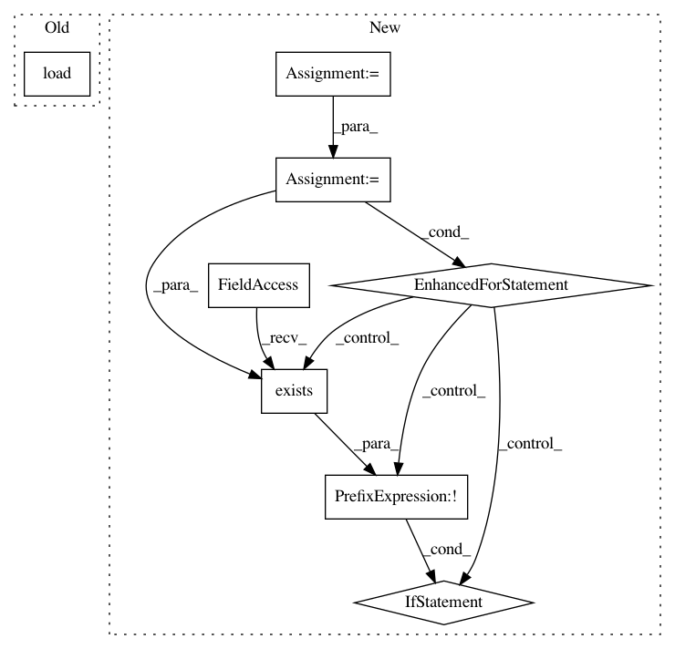

3a181c8d229d3f45d6457cd329d2336b07b2330b,autokeras/pretrained/voice_generator/voice_generator.py,VoiceGenerator,__init__,#VoiceGenerator#Any#Any#,244
Before Change
self.hop_length = 0
self.overwrite = overwrite
self.device = get_device()
self.load()
def load(self):
self._maybe_download()
self.sample_rate = Hparams.sample_rate
After Change
class Hparams:
name = "deepvoice3"
// Text:
// [en jp]
frontend = "en"
// Replace words to its pronunciation with fixed probability.
// e.g. "hello" to "HH AH0 L OW1"
// [en jp]
// en: Word -> pronunciation using CMUDict
// jp: Word -> pronounciation usnig MeCab
// [0 ~ 1.0]: 0 means no replacement happens.
replace_pronunciation_prob = 0.5
// Convenient model builder
// Definitions can be found at deepvoice3_pytorch/builder.py
// deepvoice3: DeepVoice3 https://arxiv.org/abs/1710.07654
builder = "deepvoice3"
In pattern: SUPERPATTERN
Frequency: 3
Non-data size: 8
Instances
Project Name: keras-team/autokeras
Commit Name: 3a181c8d229d3f45d6457cd329d2336b07b2330b
Time: 2019-02-08
Author: jhfjhfj1@gmail.com
File Name: autokeras/pretrained/voice_generator/voice_generator.py
Class Name: VoiceGenerator
Method Name: __init__
Project Name: studioml/studio
Commit Name: bb6b2d059ad7b8a231d9f8015b41e60f033eaf76
Time: 2017-08-04
Author: peter.zhokhov@sentient.ai
File Name: studio/model.py
Class Name:
Method Name: get_config